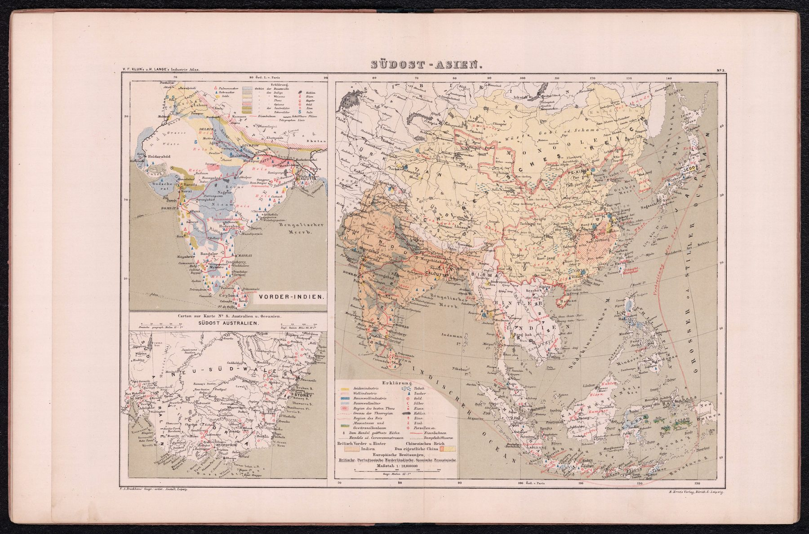

← Administered Empire and Victorian Atlas

A commercial-school atlas
V. F. Klun, a professor of geography and statistics, and Henry Lange prepared the atlas for commercial schools, merchants and industrial readers. The Brockhaus cartographic establishment engraved the sheet for publication by E. Ernst.
Products and connections
The map’s subject is trade as much as territory. It belongs to an atlas concerned with exports, industry, communications and commercial comparison. India appears within a broader Asian economic system rather than as the sole centre of attention.
A continental European view
The sheet shows German-speaking educational and commercial institutions treating distant regions, as British official cartography did, as systems of resources and exchange to be studied methodically.
On the sheet
India is an inset. The main sheet is Südost-Asien from the Caspian to Japan, with Vorder-Indien – ‘Hither India’ – boxed at the upper left at a larger scale and south-east Australia beneath it. The Erklärung is a list of commodities: silk, wool, cotton industry and cotton cultivation, the region of the best tea, the rice region, nutmeg and clove, tobacco, sugar, gold, silver, iron, coal, tin, zinc, porcelain, with railways and steamship routes; the India inset adds palm sugar, indigo, wheat, opium and salt, and ‘Diamanten’ is printed in red beside Golconda. Longitude is counted östl. L. v. Paris, east of Paris, on a Zurich publication drawn in Leipzig; the scale is 1:28,800,000.
The gaze
The intended reader was a pupil being trained for trade, and the sheet teaches accordingly. India is one entry in a syllabus of Asian markets, set beside its eastern neighbours as a source of goods and a stage on the routes between them. Nothing on the sheet asks to be admired; it asks to be learned.